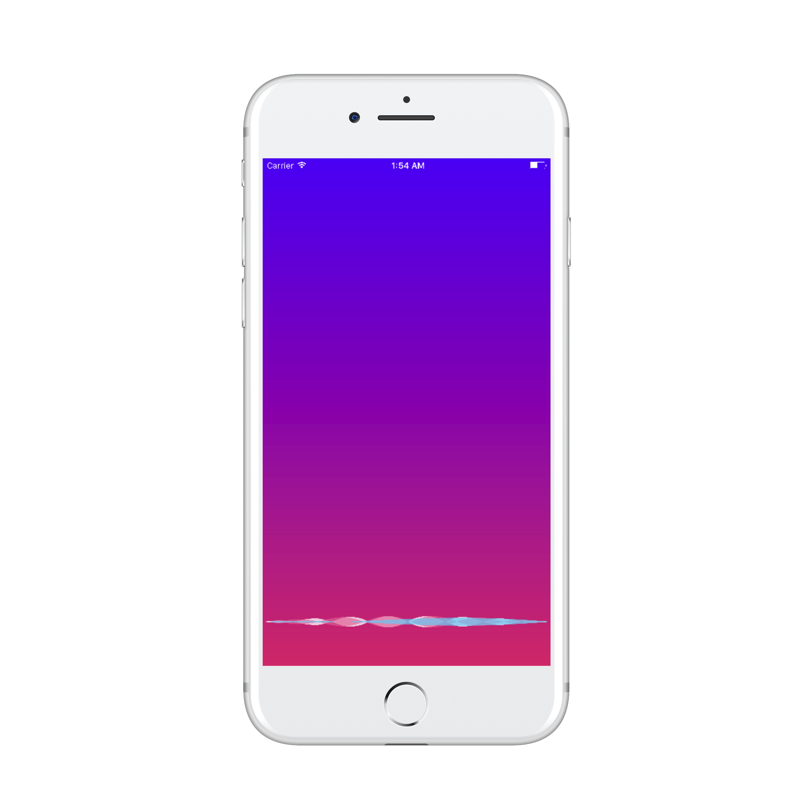
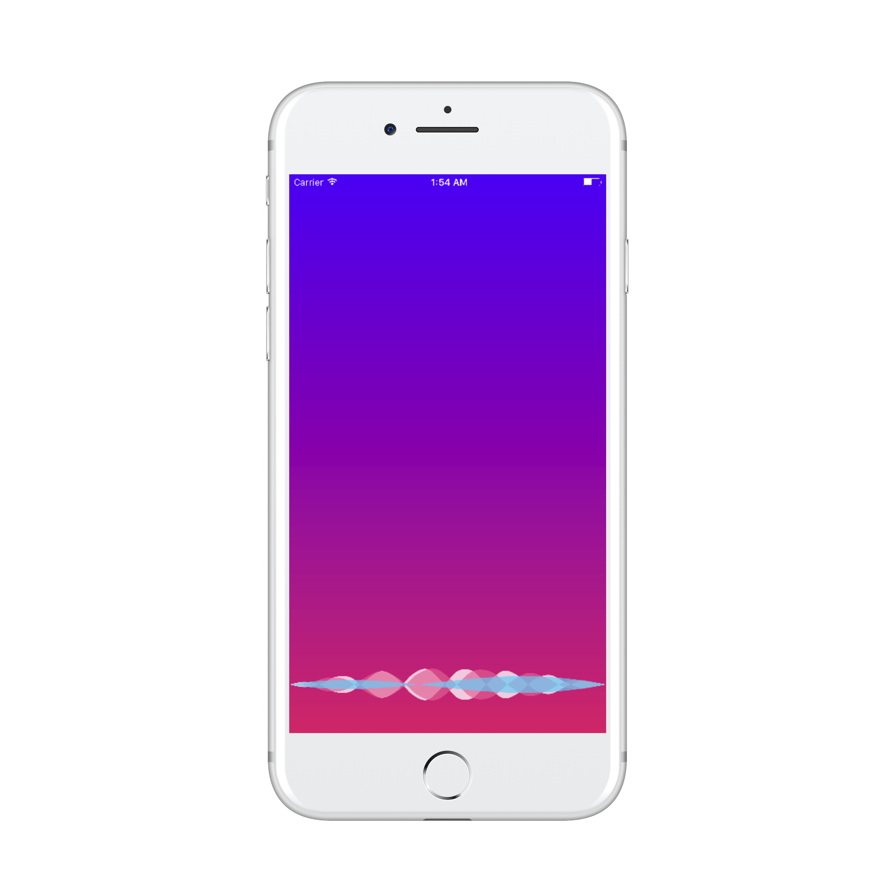

OCWaveView - Meu primeiro pod
Já há algum tempo eu tenho criado apps que de alguma forma utilizam reconhecimento de voz e eu sempre usava uma classezinha, subclasse de UIView, para mostrar um feedback visual do volume de áudio - algo semelhante às ondinhas da Siri.
 Dessa vez eu resolvi fazer as coisas de um jeito um pouquinho melhor e crirar um componente separado. A partir dessa ideia surgiu um pod: OCWaveView
O código está lá esperando a sua contribuição!
E, claro, se você tem um app que usa algum tipo de entrada de áudio, dê uma olhada na OCWaveView e fique à vontade para usar, alterar, reclamar, contribuir...